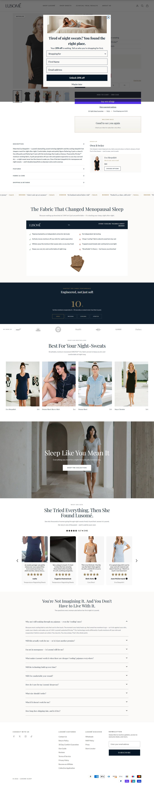

lusome.com · sleepwear cooling/menopausa · CAD (vende também em USD)

Tag "BEST/HERO/Bestsellers" no catálogo. 22 imagens de produto, todas fotografia própria de estúdio.
Mediana do catálogo: $88 CAD · faixa $25 a $500 CAD (36 produtos)
| Produto (linha do ângulo cooling) | Preço (CAD) | Papel |
|---|---|---|
| Eva Sleepshirt | $88 | Core, produto herói do anúncio campeão ("The #1 Hot Sleeper Secret") |
| Sheets premium (Xirotex) | $328 | Upsell de ticket alto — o ângulo mais repetido nos anúncios ativos aponta pra ele, não pro sleepwear |
anuncia no Google ~200 anúncios (Google Ads Transparency Center)
Operação verificada como SOME INC.. O volume no Google (~200) é 5,7x maior que no Meta (35) — sinal importante: esta NÃO é uma loja Meta-dependente, o canal principal parece ser Search/vídeo no Google, o que muda a leitura de defensabilidade (diversificação de canal, não arbitragem de um canal só).
| Criativos únicos (amostra completa, 35 ativos) | ~24 |
| Fator de duplicação | ~1,5x (baixo — pouca repetição do mesmo criativo) |
| Janela de criação | 10/jul a 27/jul/2026 (a maioria) + 1 campeão de 18/jun ainda ativo |
| Anúncios por dia | ~2,1/dia (35 anúncios / ~17 dias de janela) |
| Criativos únicos por semana | ~9,9 (24 únicos / ~17 dias × 7) |
| Mix de formato e sofisticação | Predominantemente estático/imagem de produto + texto de resultado. Sofisticação nível 1-2 — copiável sem produção cara. |
Países: Canadá 60,14% · EUA 39,86%. Canais em ordem: Orgânico (1º), Afiliado (2º), Pago (3º) — operação não depende majoritariamente de mídia paga.
1÷11% por construção.| Headline |
|---|
| "The #1 Hot Sleeper Secret 🏆" |
| "Cooling for Menopausal Night Sweats" |
| "26 More Minutes of Sleep Per Night" |
| "The Only Sheets Proven to Cool" |
| "Stay Cool All Summer, Sleep All Night" |
| "The Gift That Ends the 3am Wake-Up" |
| "Hotel Luxury, Lab-Proven Cooling" |
| "The Cooling Nightie for Night Sweats" |
| "The #1 Sleepshirt for Night Sweats" |
O que faz o campeão vender, decodificado dos criativos e da PDP.
| Big idea / ângulo | Não é sobre dormir melhor em geral — é sobre um mecanismo específico de tecido que resolve o suor noturno da menopausa, nomeado sem rodeio. |
| Mecanismo único | Tecido de marca registrada "Xirotex™" que "absorve calor antes do suor aparecer", com prova de "estudo de faculdade de medicina Ivy League" e resultado quantificado ("26 minutos a mais de sono"). |
| Formato de hook | Nomeação direta e sem eufemismo: "Cooling for Menopausal Night Sweats", "The #1 Hot Sleeper Secret". Nunca disfarça a condição por trás de "sono melhor" genérico. |
| Estrutura do presell | Rede de ~10 páginas de advertorial estilo notícia/exposé no sitemap ("the-menopausal-breakthrough-ignored-by-big-pharma...", "university-study-reveals..."), fora do funil padrão de anúncio→PDP — reforça autoridade antes da compra. |
| Objeção principal | "Já tentei todo tipo de tecido 'cooling' e nada resolve." Respondida com o mecanismo específico (age antes do suor, não depois) e a prova clínica citada. |
O que copiar de cada página, com o link pra abrir e estudar.
| Home — o que modelar | Headline "Night Sweats Stop Here" nomeando a condição direto, subtítulo definindo a marca como "complete sleep system" (sleepwear + sheets), sem enrolação. 🏬 abrir home ↗ |
| PDP — o que modelar | Eva Sleepshirt: PDP direta, sem bump/upsell no funil (oportunidade de melhoria pro mentorado — ver plano), foco total no mecanismo do tecido. 🛍️ abrir PDP do campeão ↗ |
Widget detectado: Judge.me. Contagem real confirmada em /pages/reviews.
Transparência sobre os limites desta ficha.
| Dado | Motivo | Método tentado |
|---|---|---|
| Copy completa das ~10 páginas de advertorial | corpo renderizado via JS pesado | WebFetch trouxe só headline/estrutura, não o corpo integral |
| Trustpilot | HTTP 403 | WebFetch direto; não houve tempo de retentar via Playwright |
| Data exata do reajuste de preço $78→$88 | só 8 capturas no Wayback, nenhuma entre out/2025 e jul/2026 | Wayback CDX na PDP do Eva Sleepshirt |
| Comentários dos anúncios | limitação da própria Ad Library pública (só expõe comentário em conteúdo político) | Playwright no ad_snapshot_url |
| Eixo | Pontos | Por quê |
|---|---|---|
| Sourcing simples | 2/2 | tecido moisture-wicking genérico, grade S-XL simples |
| Ticket fecha sem escada | 2/2 | funil observado sem bump/upsell, core sozinho sustenta o CPA do setor |
| Criativo simples de produzir | 1/2 | o ÂNGULO é simples, mas a Lusomé produz com fotografia de estúdio própria (barreira real se copiado 1:1) |
| Mecanismo com urgência | 2/2 | dor física recorrente (night sweats), não compra adiável |
| Investimento de entrada baixo | 2/2 | CPA do setor Health/Wellbeing ~11%, ticket $78-90 acessível |
| Sem dependência de autoridade | 2/2 | vende no mecanismo do tecido, não em celebridade/influencer |
Nível é etiqueta de "pra quem serve", não nota de corte: 10-12 iniciante, 6-9 médio, 0-5 avançado.
É a única loja qualificada nesta pesquisa (EUA, Reino Unido, Alemanha, Europa) que vende sleepwear vestível de verdade no ângulo cooling/menopausa em porte pequeno/médio — as outras 3 candidatas fortes encontradas (Cool-jams, Dore&Rose, jijamas) são marcas DTC maduras de 13 a 19 anos, não replicáveis. Copie o ângulo, o mecanismo nomeado e a estrutura de oferta da Lusomé; monte a produção (fotos, apps, SEO) do tamanho do seu orçamento, não do tamanho da operação dela hoje.